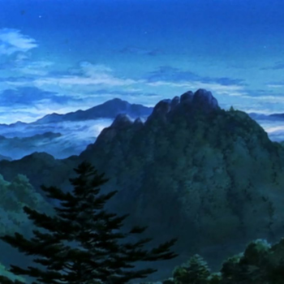
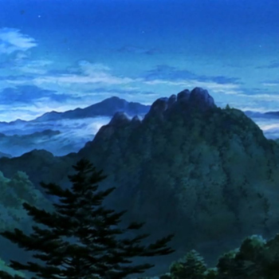

Princesa Mononoke
1997 | 133 min | fantasia
1997 | 133 min | fantasia
Princesa Mononoke é um filme de animação japonês dirigido por Hayao Miyazaki e produzido pelo Studio Ghibli. A data de estreia no Japão foi 12 de julho de 1997 e a estreia no restante do mundo aconteceu a partir de 1999. Princesa Mononoke se passa no final do período Muromachi (aproximadamente 1336 a 1573) do Japão com elementos de fantasia. A história segue o envolvimento do jovem príncipe Emishi Ashitaka em uma luta entre os deuses de uma floresta e os humanos que consomem seus recursos. O termo “Mononoke” não é um nome, mas uma palavra japonesa para espírito ou monstro: seres sobrenaturais que mudam de forma. Princesa Mononoke foi o primeiro longa-metragem de animação a ganhar o Prêmio da Academia Japonesa de Melhor Filme. Para a cerimônia do 70º Oscar, foi a candidatura japonesa na categoria Oscar de Melhor Filme em Língua Estrangeira, mas não conseguiu a indicação.
Após enfrentar um deus javali enfurecido, o príncipe Ashitaka é amaldiçoado com um mal que pode matá-lo. Para encontrar a cura, ele decide viajar para longe e acaba se envolvendo numa batalha entre os deuses animais da floresta e os moradores de uma vila de mineiros, que aos poucos estão destruindo a floresta.
No Brasil o filme chegou em BluRay e DVD através do box da Coleção Studio Ghibli Vol. 1 lançado pela distribuidora Versátil Home Video em versão dublada e legendada. Atualmente está disponível junto a mais outros 20 filmes do Studio Ghibli na plataforma de streaming da Netflix.


 
